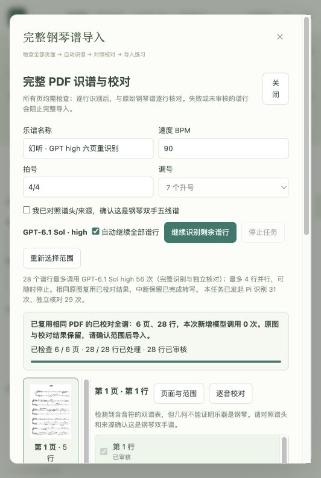

已接入当前本机琴伴 App。保留全部页面检查、独立完整复读、原谱音头定位、结构校验及逐行人工校对，识谱仍固定同一模型和 high 推理强度，本机 OMR 调用0次。
| 并发 | 2行 → 全局最多4行；仍保留两次独立读取 |
|---|---|
| 首轮转写用量，固定4条原图 | 24,820 → 17,818 tokens，减少28.2% |
| 首轮单次耗时中位数，固定4条原图 | 65.8秒 → 47.9秒；样本量4，服务响应有波动 |
| 现场4行首次紧凑测试 | 117个音头，8次请求，共98.7秒 |
| 最终倚音校准复测 | 仅重测受影响2行，71个音头，4次请求，共191.8秒；一条复读约147秒 |
| 相同六页PDF重复导入 | 6页、28行、1068音头，新增调用0次，新增tokens为0 |
| 准确度回归 | 全部六页1068音头离线格式回归无变化；现场最终117音头音高、拍位、时值与延音一致 |
| 工程验证 | 221项测试通过；生产构建通过；本机App已载入优化 |
| 本轮额外验证消耗 | 12次请求，48,060已报告tokens，无缺失用量 |
没有把相同谱子的缓存复用称为重新识别。新谱行仍需识别和独立核对各一次；复读不再生成用于比较之外的坐标，确认结果才会进入同图缓存。原图、裁切、调号、拍号或上下文变化会使行缓存失效；相同完整PDF则按文件SHA256恢复已校对原任务。缓存访问遵循现有任务权限。
已完成的首轮转写会立即保存。复读失败或被停止时可只补复读，避免重读已完成的音符。限流后暂停新请求，不自动反复扣用量；不完整谱行继续阻止整谱导入。倚音先按纸面非计量音头读取，App统一分配0.0625拍借时，原始音头全部保留。
实测边界：没有用最终优化流程对全新六页再次整批调用，因此尚不能宣称45分钟已降为某个新的整谱耗时。首轮4行98.7秒与倚音加固后2行191.8秒均保留；服务单次响应存在波动。28.2%只代表固定四条原图成功首轮转写的tokens降幅。账号周额度不能按此百分比直接换算。
